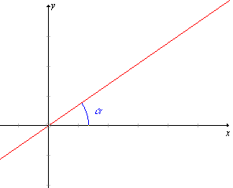
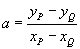
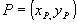
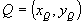
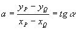
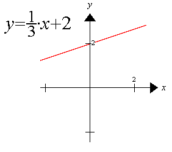
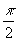
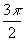
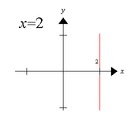

Equação Reduzida de Uma Reta
y = ax + b
Significa do coeficiente a:
O coeficiente a é chamado de coeficiente angular, ele indica a declividade(inclinação) da reta em relação ao eixo das abcissas.
Cálculo do valor de a:


; onde
e
, são pontos da reta.
Observação:

Onde a
é o ângulo que a reta forma com o eixo das abcissas (eixo x).
Significa do termo independente b:
O termo b é chamado de coeficiente linear, ele indica onde a reta intercepta(corta) o eixo das ordenadas(eixo y)
Exemplo:

Observação: Se o ângulo que a reta forma com o eixo das abcissas for

,
ou qualquer um dos seus respectivos côngruos, não existirá a tangente do ângulo. Neste caso a reta é vertical e sua equação será da forma:x = k ; k Î Â
Exemplo:
